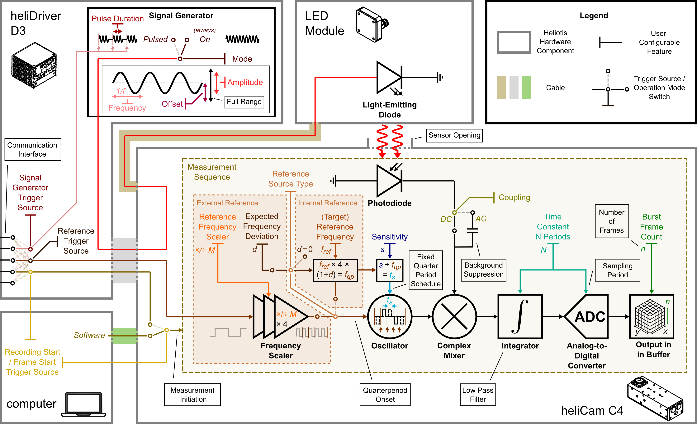

Graphical Summary
{kind=link}

Fig. 33 Schematic Summary of Principal Operation Modes and User-Configurable Features
The heliCamTM C4 can be employed in different operation modes. Fig. 33 summarizes the most important switching points between them. Additionally, it shows other critical configurable lock-in camera features.
For testing purposes, the heliCamTM C4 can be fed with a well-controlled optical input signal emitted by the Heliotis LED module. To that end, the signal generator unit in the heliDriverTM D3 can create a sinusoid current output, which is redirected to the LED via the heliCamTM C4 and drives its illumination.
Three main signal generator modulation modes are available.
The signal generator modulation can be operated in the always On mode, producing AC and DC output continuously.
The amplitude modulation can be set to Off, so that the signal generator produces only DC offset. This is useful for Fixed Pattern Noise (FPN) correction.
Alternatively, there is the Pulsed mode, in which oscillating bursts, brought about by the external Signal Generator Trigger, are interrupted by period with constant light intensity.
Certain features, such as the signal generator’s Pulse Duration or the Signal Generator Trigger Source determining the trigger signal’s source, are specific to the last mode. Others, such as the Frequency, (peak-to-peak) Amplitude and the Offset of the input sinusoid are common in all configurations. Both Amplitude and Offset are indicated in percent of the signal generator’s full range.
A new measurement can be initiated by an internal trigger from software or by an external trigger fed in via a pin on the heliDriverTM D3’s communication interface.
The heliCamTM C4 can be used with Internal or External reference, which determines if the clock signal driving the demodulation, is produced internally or externally. The switch between these two operating modes is set by the feature Reference Source Type.
If the reference source is set to Internal, the heliCamTM C4 determines the duration of the sensor operation in each quarter period according to the feature Lock-In Actual Reference Frequency. Another quarter period is immediately initiated once the sensor has completed its scheduled operation in the preceding one.
In the External Reference mode, a pulse wave (0-5 V) must be supplied to the camera via the heliDriverTM D3’s communication interface. By default, it is expected to oscillate at the reference frequency. However, you have the option of setting a frequency multiplication or division factor with the feature Reference Frequency Scaler. Behind the scenes the input frequency (evaluated once immediately before measurement onset) is scaled with an additional multiplication factor four, such that the trigger signals the beginning of a new quarter period, rather than a period. Only with the setting “DivideBy4” is frequency scaling effectively disabled and the reference trigger signal is directly relayed to the sensor. Additional features are only active with the External Reference mode enabled. By setting an Expected Frequency Deviation, for instance, you may artificially shorten the time per quarter period during which the camera sensor is busy and unresponsive to trigger signals. In this fashion, you can prevent missing early trigger impulses if your trigger signal is unsteady.
The Sensitivity determines during which fraction of a quarter period, the sensor is light-sensitive.
The combined information about the onset of a quarter period and the sensor activity within it determines a “dual-phasic”, complex effective reference signal. The first step of the sensor action can be thought of as multiplying this effective reference signal with the optical input in a mixing step.
Setting the Coupling to AC enables background suppression. The potentially large DC background is hence removed prior to mixing at the cost of an integration cycle.
The function of the feature Time Constant N Periods is twofold. It determines the duration of the rectangular filter that is applied to result of mixing and, at the same time, the sampling period.
Finally, the feature Burst Frame Count determines the number of frames acquired in a measurement.